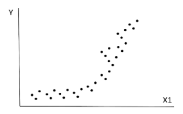

Annales
Corrections officielles
2024
Statistiques élémentaires
Dans une étude épidémiologique vous mettez en évidence une corrélation entre l’IMC (indice de masse corporelle) et la tension artérielle moyenne égale à r = 0,22 avec un « p » égal à 0,0012. Un reviewer vous fait remarquer que le pourcentage de variance partagé par ces deux variables, égal à 0,222 = 0,0484, est très faible et donc que cette relation est négligeable. Que lui répondez-vous ?
La corrélation de Pearson (r) mesure la force et la direction d’une relation linéaire entre deux variables continues. Un r de 0,22 indique une corrélation positive faible entre l’IMC et la tension artérielle moyenne.
Dans le cas d’une régression linéaire simple (donc à une seule variable explicative), le carré du coefficient de corrélation (r²) représente le pourcentage de variance dans la variable dépendante (tension artérielle moyenne) qui peut être expliqué par la variable indépendante (IMC). Dans ce cas, un r² de 0,0484 signifie que seulement 4,84 % de la variance dans la tension artérielle moyenne peut être expliquée par l’IMC.
Le p-value de 0,0012 indique que cette corrélation est statistiquement significative, ce qui signifie qu’il y a une faible probabilité que cette relation soit due au hasard.
Le pourcentage de variance partagé (r²) de 4,84 % indique que seulement une petite partie de la variance dans la tension artérielle moyenne peut être expliquée par l’IMC. Cependant, cela ne signifie pas nécessairement que la relation est négligeable. Même une faible corrélation peut être cliniquement significative, surtout si elle est cohérente avec d’autres recherches ou si elle a des implications pratiques importantes.
Il est important de considérer le contexte clinique et les implications pratiques de cette relation, plutôt que de se concentrer uniquement sur la force de la corrélation ou le pourcentage de variance partagé.
Vraie correction :
L’interprétation de la force d’une association quand celle-ci est représentée par un coefficient de corrélation (de Pearson).
Il n’y a pas de consensus sur ce point dans la littérature. Dans certaines disciplines, comme en économétrie, voire en génétique dans le domaine biomédical, il est effectivement habituel de discuter en termes de pourcentage de variance expliquée ou partagée.
C’est cependant critiqué, notamment du fait qu’un pourcentage de variance expliqué dépend fortement :
1/ de l’échantillonnage de l’étude (un échantillon homogène conduira à une faible variance phénotypique et donc à des pourcentages de variance expliquée qui seront également faibles),
2/ de l’importance des erreurs de mesure et du bruit (quand ce dernier est important, puisque par définition il ne peut pas être expliqué les pourcentages de variance partagées seront faibles).
Le coefficient r lui-même n’est pas simple à interpréter, dans la littérature il est souvent considéré qu’un r < 0,2 est plutôt faible, mais il s’agit d’un point de vue purement subjectif.
Notamment parce que l’importance clinique et de santé publique de la relation va influer sur le caractère négligeable ou pas de cette dernière.
A quoi servent les tests statistiques ?
En médecine (et en recherche biomédicale en général), les tests statistiques sont utilisés pour analyser des données et tirer des conclusions sur des populations à partir d’échantillons. Ils permettent de déterminer si les observations faites dans un échantillon sont suffisamment fortes pour être généralisées à une population plus large.
Il s’agit d’un processus inférentiel, c’est à dire qu’on utilise les données d’un échantillon pour faire des inférences sur une population.
Tout résultat tiré d’un échantillon présente une incertitude quant à sa généralisation à la population. Les tests statistiques aident à quantifier cette incertitude en fournissant des mesures telles que les p-values et les intervalles de confiance.
Comment vérifier les conditions de validité d’une régression linéaire ?
Linéarité : La relation entre les variables indépendantes et dépendantes doit être linéaire. Cela peut être vérifié en examinant les graphiques de dispersion des résidus.
Homoscédasticité : La variance des résidus doit être constante à travers toutes les valeurs des variables indépendantes. Cela peut être vérifié en traçant les résidus.
Normalité des résidus : Les résidus doivent suivre une distribution normale. Cela peut être vérifié en utilisant des tests de normalité (comme le test de Shapiro-Wilk) ou en examinant les graphiques Q-Q des résidus.
Indépendance des résidus : Les résidus doivent être indépendants les uns des autres, mais c’est beaucoup plus difficile à vérifier.
Statistiques avancées
Vous souhaitez modéliser le nombre de passages aux urgences dans l’année pour des sujets issus d’une population gériatrique. Lors de la phase initiale de l’analyse vous constatez que cette variable présente une sur-dispersion. A quoi cela correspond-il et quelles sont les solutions que vous avez pour réaliser une telle modélisation ?
Le nombre de passage aux urgences est une variable de comptage, souvent modélisée par une régression de Poisson.
La distribution de Poisson est caractérisée par une moyenne égale à la variance (paramètre \(\lambda\))
La surdispersion survient lorsque la variance est supérieure à la moyenne.
Prévisible ici, car pour un sujet donné, la survenue d’un évènement n’est pas indépendante de la survenue d’un autre évènement (ex : pathologie sous-jacente expliquant plusieurs passages aux urgences).
2 types de solutions :
Changement de modèle :
Quasi-Poisson : permet de modéliser la surdispersion en introduisant un paramètre de dispersion.
Modèle binomial négatif : une alternative à la régression de Poisson qui gère naturellement la surdispersion.
Approches robustes :
Estimateur sandwich : ajuste les erreurs standards pour tenir compte de la surdispersion.
Bootstrap : méthode de rééchantillonnage pour estimer les erreurs standards robustes.
Vraie correction : Il s’agit d’une variable qui peut être assimilée à un processus de comptage. Il y a surdispersion quand la variance est supérieure à la moyenne, une loi de Poisson ne peut donc pas être utilisée. Cette surdispersion était prévisible ici, elle survient quand, pour un sujet donné, la survenue d’un évènement n’est pas indépendante de la survenue d’un autre évènement. Si un sujet est atteint d’une pathologie sous-jacente (dénutrition, cancer, BPCO, etc.) ce sera le cas. Solution : classiquement on utilise un modèle de quasipoisson ou un modèle binomial négatif. De façon plus « technique » on peut utiliser un estimateur sandwich ou un bootstrap. De façon transgressive on pourrait utiliser un modèle linéaire avec un estimateur robuste devariance.
Dans une étude épidémiologique vous avez utilisé un questionnaire de qualité de vie de 18 items conduisant à un score global. Le questionnaire que vous avez envoyé aux sujets répondants a été mal imprimé et l’item n°13 est parfois difficile à lire, de ce fait la réponse est souvent manquante. Comment faites-vous pour analyser la variable « score de qualité de vie » ?
Il s’agit d’une donnée manquante.
Identifier le mécanisme de données manquantes (MCAR, MAR, MNAR).
Ici, probablement MAR (Missing At Random) car la difficulté de lecture peut être liée à des caractéristiques observables (ex : âge, niveau d’éducation).
Rappel :
MCAR (Missing Completely At Random) : les données manquantes sont indépendantes des valeurs observées et non observées (serait le cas si il manquait des données au hasard, par exemple si certaines pages du questionnaire étaient manquantes).
MAR (Missing At Random) : les données manquantes dépendent uniquement des valeurs observées.
MNAR (Missing Not At Random) : les données manquantes dépendent des valeurs non observées (on ne peut pas vérifier ce mécanisme avec les données disponibles).
Dans la correction : c’est une MCAR !!! donc bizarre car c’est cohérent que la difficulté de lecture soit liée à des caractéristiques observables (ex : âge, niveau d’éducation).
Imputation : globalement éviter l’imputation multiple qui va complexifier l’analyse du score global.
On peut utiliser un échantillonneur de Gibbs dans le cas d’un questionnaire de qualité de vie car il permet d’imputer les valeurs manquantes en tenant compte de la structure des données et des relations entre les items du questionnaire.
Pourquoi le modèle d’analyse factorielle à 1 facteur est-il fondateur de la psychométrie (discipline qui a fondé les méthodes statistiques utilisées dans le domaine des mesures subjectives) ?
Le caractère fondateur du modèle d’analyse factorielle à un facteur réside dans sa capacité à modéliser la relation entre des variables observées (items du questionnaire) et une variable latente (le facteur unique).
Il s’agit d’un questionnaire unidimensionnel, c’est à dire que tous les items mesurent une seule et même dimension sous-jacente (le facteur unique).
Mathématiquement, le modèle d’analyse factorielle à un facteur postule que chaque variable observée peut être exprimée comme une combinaison linéaire du facteur unique plus une erreur spécifique à chaque variable.
Ce modèle permet d’estimer la charge factorielle de chaque item, qui indique dans quelle mesure chaque item est lié au facteur unique.
Vraie correction :
Il y a un intérêt mathématique.
Modèle AF1 : \(X_i = a_i + b_i \Theta + \varepsilon_i\) justifie le fait que la somme des \(X_i\) est une estimation asymptotique (en fonction du nombre d’items \(n\)) de \(\Theta\), la variable d’intérêt sous-jacente.
En effet, la somme des \(\varepsilon_i\) croit comme racine de \(n\) alors que la somme des \(b_i \Theta\) croit comme \(n\).
Il y a une intérêt conceptuel. Le modèle AF1 suggère explicitement que chaque item estime le même concept \(\Theta\) (en plus d’un bruit \(\varepsilon_i\)). Le score globale doit donc vraisemblablement bel et bien mesurer ce que nous espérons qu’il mesure.
En quoi consiste l’analyse des données dans une étude qualitative ?
Dans une étude qualitative (analyse d’un discours par exemple), l’analyse est faite par des sujets humains.
Il s’agit d’une série successive de codage du texte à analyser par le codeur : du plus près du texte (micro-codage), au plus synthétique (codage axial ou codage macroscopique consistant en un regroupement des micro-codes).
Pour améliorer la qualité du codage, plusieurs codeurs travaillent en parallèle (triangulation).
Les dernières inclusions sont stoppées lorsqu’une saturation du codage est observée (donc le codage peut être fait au fur et à mesure des inclusions).
2023
Outils de la méthodologie
La comparaison de 2 anti-cancéreux conduit aux courbes de Kaplan- Meyer suivantes, avec un HR égal à 0,62. Un collègue vous fait remarquer que l’hypothèse des risques proportionnels n’est pas vérifiée. À quoi cela correspond-il et quelles en seraient les conséquences potentielles ?

Sur la courbe, les deux courbes de survie se croisent, ce qui indique que le rapport des risques n’est pas constant dans le temps.
L’hypothèse des risques proportionnels est une condition clé pour l’utilisation du modèle de Cox (pas pour la simple comparaison de Kaplan-Meier et le test du log-rank).
Elle correspond à l’idée que le rapport des risques entre les deux groupes de traitement reste constant au fil du temps, c’est à dire que le rapport des probabilité d’évènement est constant au cours du temps (ce n’est pas le risque qui est constant, mais le rapport des risques).
Ici, le rapport des risques n’est visiblement pas constant : il est proche de 1 les trois premiers mois, puis il diminue fortement par la suite.
Les conséquences potentielles de la violation de cette hypothèse sont discutées dans la littérature. Certains considèrent que le HR (ici 0,62) n’est pas interprétable et qu’il faut utiliser un modèle avec une variable dépendante du temps. D’autres considèrent qu’il est interprétable mais comme un HR moyen, favorisant probablement les temps précoces par rapport aux temps tardifs.
Dans la partie « méthodologie » d’un article, les auteurs expliquent que comme il ne peuvent pas accepter l’hypothèse de mécanisme « MAR » de leurs données manquantes, ils ont été conduit à négliger ces dernières. Que pensez-vous de cette stratégie d’analyse ?
Le mécanisme MAR (Missing At Random) suppose que la probabilité qu’une donnée soit manquante dépend uniquement des valeurs observées.
Donc qu’on peut ignorer les données manquantes sans introduire de biais dans l’analyse car les données manquantes sont aléatoires par rapport aux valeurs non observées.
Si les auteurs disent qu’ils ne peuvent pas dire que c’est MAR, cela suggère que les données manquantes pourraient être MNAR (Missing Not At Random), où la probabilité qu’une donnée soit manquante dépend des valeurs non observées donc ignorer les données manquantes pourrait introduire un biais significatif dans les résultats.
Quelles sont les circonstances où il est licite d’utiliser une méthode « pas à pas » (stepwise) de sélection de variables dans une régression logistique ?
Les méthodes pas à pas (stepwise) de sélection de variables sont controversées en raison de leur tendance à surajuster les données et à produire des modèles instables.
Dans l’idéal, il vaut mieux sélectionner les variables en se basant sur des connaissances préalables, la littérature existante, et des critères cliniques.
A la limite, on peut réaliser une analyse univariée initiale pour identifier les variables à inclure selon les résultats univariés.
Correction : En pratique cette utilisation fait sens pour calculer des scores de prédiction. Il faut alors estimer le modèle sur un échantillon test puis apprécier ses performances prédictives sur un échantillon de validation. En effet, si l’on souhaite non pas prédire, mais plutôt rechercher des facteurs de risque susceptibles d’expliquer la survenue d’une maladie, alors le modèle doit être construit avant tout sur des bases cliniques ou physiopathologiques. Si ces dernières sont inexistantes, alors une régression pas à pas peut être envisagée, mais ici aussi avec un échantillon test et un échantillon de validation.
Dans la représentation graphique d’une matrice de corrélation par analyse en composantes principales, pourquoi les points variables sont-ils à l’intérieur d’un cercle ?
Avant de réaliser l’ACP sur une matrice de corrélation, les variables sont centrées et réduites.
Après centration-réduction, chaque variable a une moyenne de 0.
Après centration-réduction, chaque variable a un écart-type de 1.
Comme la variance = \(\text{écart type}^2\), chaque variable a une variance de 1.
L’ACP décompose la variance totale des variables en variance expliquée par chaque composante principale.
Les coordonnées d’une variable dans le plan des deux premières composantes principales (PC1, PC2) sont les corrélations de cette variable avec PC1 et PC2.
L’abscisse = corrélation avec PC1.
L’ordonnée = corrélation avec PC2.
Par définition, une corrélation de Pearson est comprise entre −1 et 1.
La distance d’une variable à l’origine dans ce plan dépend de la somme des carrés de ses corrélations avec PC1 et PC2.
La somme des carrés des corrélations d’une variable avec toutes les composantes principales est égale à la variance totale de cette variable.
Ici, la variance totale vaut 1 (car les variables sont standardisées).
Donc la somme des carrés des corrélations avec toutes les composantes principales vaut 1.
Par Pythagore, la distance au carré à l’origine dans le plan (PC1, PC2) est égale à la somme des carrés des corrélations avec PC1 et PC2.
Cette somme est toujours inférieure ou égale à la somme des carrés des corrélations avec toutes les composantes principales, qui vaut 1.
Donc la distance à l’origine dans le plan (PC1, PC2) ne peut pas dépasser 1.
Statistiques élémentaires
Qu’est-ce qu’un beeswarm plot (diagramme en essaim d’abeilles) ? Quels en sont les intérêts et les limites ?
Un beeswarm plot est un diagramme en essaim d’abeilles qui affiche chaque point de données individuel dans une distribution.
La distribution est affichée car les points sont ajustés horizontalement pour éviter le chevauchement.
C’est bien quand y a pas trop de données, sinon ça fait des trucs super larges.
Visualisation des sous-groupes en faisant des couleurs différentes.
Pour le simple calcul d’un coefficient de corrélation entre 2 variables quantitatives dont les distributions sont toutes deux fortement asymétriques, faut-il privilégier le coefficient de corrélation de Spearman ou celui de Pearson ?
La distribution normale n’est pas une condition nécessaire pour utiliser le coefficient de corrélation de Pearson.
Les conditions nécessaires au calcul du coefficient de Pearson sont :
Relation linéaire entre les deux variables.
Homoscédasticité (variance constante des résidus).
Si ces conditions sont remplies, Pearson est plus puissant que Spearman.
Spearman : comme il est basé sur les rangs, il est moins sensible aux valeurs extrêmes et aux distributions asymétriques.
Un interne compare l’âge moyen des patientes hospitalisées en 2022 dans 2 services spécialisés dans la prise en charge de l’anorexie mentale. Il trouve 12 ans dans un cas et 15 ans dans l’autre et conclut qu’il y a une différence. Le chef de service l’interpelle en lui faisant remarquer que l’on ne peut affirmer une telle conclusion qu’après avoir réalisé un test statistique. Qu’en pensez-vous ?
Effectivement, c’est différent !
Il faut réaliser un test statistique pour savoir si c’est généralisable à une population infinie sous jacente.
Il est licite de faire un test si la question posée est “est-ce que l’écart observé entre les deux moyennes est compatibe avec l’hypothèse que ces deux populations de patientes sont tirées au sort d’une population infinie sous-jacente ?”
Un modèle linéaire explique la variable Y « VEMS » (volume expiratoire maximum par seconde, en litres par seconde) en fonction de la variable X1 « âge » (en années) et de la variable X2 « statut tabagique » (‘non-fumeur’, ‘ancien fumeur’, ‘fumeur actuel’). Comment le logiciel procède-t-il pour tester l’effet de X2 sur Y à X1 constant ?
Il faut d’abord se demander si X2 est catégorielle pure (non ordonnée) ou ordonnée.
Le modèle détermine une valeur de référence pour la variable et va tester l’effet des autres valeurs de la variable sur la moyenne du VEMS par rapport à la variable de référence.
Si X2 est catégorielle pure : on crée deux variables binaires (dummy coding) avec “non-fumeur” comme référence, puis on teste conjointement que les deux coefficients sont nuls (\(a'_1 = a'_2 = 0\)). Donc le logiciel va calculer l’effet sur la moyenne du VEMS des fumeurs actuels et des anciens fumeurs par rapport aux non-fumeurs, à âge constant.
Si X2 est ordonnée : on recodage simplement en (0, 1, 2) et on teste un seul coefficient (\(a_2 = 0\)).
2022
Outils de la méthodologie
A quoi est égal l’aire sous une courbe de Kaplan Meyer ?
L’aire sous la courbe de Kaplan-Meier (AUC) n’est pas une mesure standard en analyse de survie.
L’aire sous la courbe de Kaplan-Meier n’a pas d’interprétation directe en termes de probabilité ou de risque.
S’il n’y a pas de censure, l’aire sous la courbe de Kaplan-Meier est égale à la durée moyenne de survie.
Vous publiez un article étudiant les facteurs de risque de refus de vaccination contre le COVID. Partant de 30 facteurs potentiel votre modèle final comprend 8 variables explicatives. Un reviewer vous demande d’appliquer une correction de Bonferroni sur vos résultats pour limiter le risque de « comparaisons multiples ». Que répondez-vous ?
On se place ici dans une logique d’analyse statistique inférentielle selon Fisher.
Il existe un article qui dit que dans une étude épidémiologique, la correction pour comparaisons multiples n’a pas de sens (To adjust, or not to adjust, for multiple comparisons, Hooper, J Clin Epidemiol. 2025).
La correction de Bonferroni est très conservatrice et peut augmenter le risque d’erreurs de type II (faux négatifs).
Il est préférable de se concentrer sur la cohérence des résultats avec la littérature existante et les connaissances cliniques.
Intérêts et inconvénients du modèle log-binomial.
Le modèle log-binomial est utilisé pour estimer les risques relatifs dans les études épidémiologiques avec une variable dépendante binaire.
Les avantages du modèle log-binomial :
Il fournit une estimation directe du risque relatif, ce qui est souvent plus interprétable que les odds ratios.
Il est approprié lorsque la prévalence de l’événement d’intérêt est élevée.
Les inconvénients du modèle log-binomial :
Il peut rencontrer des problèmes de convergence, surtout lorsque les probabilités prédites sont proches de 1.
Il nécessite des ajustements spécifiques pour gérer les données corrélées ou les effets aléatoires.
Un collègue disposes d’une très petit échantillon (n=10). Les statistiques paramétriques étant difficilement utilisables il pense recourir à un bootstrap. Il vous demande conseil, que lui dites-vous ?
Le bootstrap est une méthode de rééchantillonnage qui peut être utile pour estimer la variabilité des statistiques dans de petits échantillons.
Cependant, avec un échantillon aussi petit (n=10), le bootstrap peut ne pas fournir des estimations fiables.
Il est important de s’assurer que les hypothèses sous-jacentes du bootstrap sont respectées.
Le bootstrap repose sur l’hypothèse que l’échantillon est représentatif de la population.
Avec un échantillon très petit, cette hypothèse peut être difficile à vérifier.
Pour le bootstrap, il faut au moins n=30.
Statistiques élémentaires
Vous calculez une corrélation entre un score de qualité de vie et une durée de consultation et trouvez un résultat r=0.34. Vos interlocuteurs cliniciens vous demandent ce que signifie concrètement cette valeur. Que répondez-vous ?
Le coefficient de corrélation de Pearson (r) mesure la force et la direction d’une relation linéaire entre deux variables continues.
Globalement, si r=1, les deux variables sont parfaitement corrélées positivement, si r=-1, elles sont parfaitement corrélées négativement, et si r=0, il n’y a pas de corrélation linéaire entre les deux variables.
Mais il n’y a pas de seuil entre tout ça pour dire si c’est faible, modéré ou fort.
Dans le cas d’une régression linéaire simple, le carré du coefficient de corrélation (r²) représente le pourcentage de variance dans la variable dépendante (durée de consultation) qui peut être expliqué par la variable indépendante (score de qualité de vie).
Mais on sait pas vraiment comment interpréter le pourcentage de variance partagée.
Vous souhaitez comparer les moyennes de deux séries de 15 mesures. Les conditions de validité du test t de Student imposent alors de vérifier une normalité distributionnelle. Que pensez-vous du recours à un test de normalité dans une telle situation ?
Les tests de normalité ne sont pas vraiment utiles car il repose sur des hypothèses qui sont difficiles à vérifier avec un petit échantillon.
Les tests s’interprètent comme “non significatif” = “normalité vérifiée”, mais avec un petit échantillon, la puissance du test est faible.
Comme la puissance est faible et impossible à estimer, on ne peut pas vraiment se fier aux résultats du test.
Il est préférable d’utiliser des méthodes graphiques (histogrammes, Q-Q plots) pour évaluer la normalité.
Il est parfois dit que l’on ne peut pas accepter une hypothèse nulle, on peut simplement ne pas la rejeter, qu’en pensez-vous ?
En statistique de Fisher : non ! on ne peut pas accepter l’hypothèse nulle, on peut seulement ne pas la rejeter (car on ne conclut pas grand chose quand la p-value est élevée)
En statistique de Neyman-Pearson : si ! on peut accepter l’hypothèse nulle si on a un test avec une puissance suffisante car on a défini des risques d’erreurs de type I et II a priori.
Une étude européenne sur la pratique du sport est réalisée dans 10 pays. Un modèle ajusté sur plusieurs covariables est réalisé et la variable « pays » est introduite comme effet (fixe). Si l’on est embarrassé par le choix d’un pays de référence (pouvant être perçu comme arbitraire et stigmatisant), comment procéder pour obtenir tout de même un effet propre à chaque pays ?
Par défaut, les pays sont transformés en 9 variables binaires avec une variable de référence.
Pour éviter de choisir un pays de référence, on peut utiliser le codage “contrastes de Helmert” ou “contrastes de somme”.
En gros, il faut que les pays soient codés en variables binaires mais sans variable de référence
Pour ça : un pays doit être codé -1 pour toutes les variables binaires
En tableau :
| Pays | Pays 1 | Pays 2 | Pays 3 | Pays 4 | Pays 5 | Pays 6 | Pays 7 | Pays 8 | Pays 9 | Pays 10 |
|---|---|---|---|---|---|---|---|---|---|---|
| X1 | 1 | 0 | 0 | 0 | 0 | 0 | 0 | 0 | 0 | -1 |
| X2 | 0 | 1 | 0 | 0 | 0 | 0 | 0 | 0 | 0 | -1 |
| X3 | 0 | 0 | 1 | 0 | 0 | 0 | 0 | 0 | 0 | -1 |
| X4 | 0 | 0 | 0 | 1 | 0 | 0 | 0 | 0 | 0 | -1 |
| X5 | 0 | 0 | 0 | 0 | 1 | 0 | 0 | 0 | 0 | -1 |
| X6 | 0 | 0 | 0 | 0 | 0 | 1 | 0 | 0 | 0 | -1 |
| X7 | 0 | 0 | 0 | 0 | 0 | 0 | 1 | 1 | 0 | -1 |
| X8 | 0 | 0 | 0 | 0 | 0 | 0 | 0 | 1 | 0 | -1 |
| X9 | 0 | 0 | 0 | 0 | 0 | 0 | 0 | 0 | 1 | -1 |
Chaque coefficient estimé dans le modèle représente la différence entre le pays correspondant et la moyenne des autres pays.
Cela permet d’obtenir un effet propre à chaque pays sans avoir à choisir un pays de référence spécifique.
2021
Outils de la méthodologie
Lors de la validation d’un instrument de mesure subjective pourquoi doit-on déterminer son niveau d’unidimensionnalité ?
La validité d’un instrument de mesure subjective passe par plusieurs étapes :
Que mesure t-il ? (validité de contenu)
Comment le mesure t-il ? (validité de construit)
Est-ce qu’il le mesure bien ? (fidélité)
L’unidimensionnalité est une condition nécessaire pour que l’instrument mesure un seul et même construit.
C’est une condition nécessaire à la réalisation d’un alpha de Cronbach, qui validera la consistence des items entre eux, c’est à dire la fidélité de l’instrument et son absence de redondance.
Comment apprécier l’accord inter-juge de 2 cliniciens portant le diagnostic oui/non de rhumatisme psoriasique chez 80 patients vus en consultation spécialisée de rhumatologie ? Comment expliquez-vous les résultats aux rhumatologues ?
Il s’agit d’évaluer l’accord inter-juge sur une variable catégorielle, ici binaire (oui/non)
On calcule donc le \(\kappa\) de Cohen, égal à \(\frac{text{concordance observée} - \text{concordance due au hasard}}{1 - \text{concordance due au hasard}}\)
Le \(\kappa\) varie entre -1 et 1, où 1 indique un accord parfait, 0 indique un accord équivalent au hasard, et des valeurs négatives indiquent un désaccord systématique.
Trouvez un exemple où 2 courbes de survies ne vérifient pas l’hypothèse des risques proportionnels. Comment les comparer dans un tel cas ?
Exemple : deux courbes de survie qui se croisent, indiquant que le risque relatif entre les deux groupes change au fil du temps.
Pour comparer ces courbes, c’est difficile car on ne peut pas appliquer de modèle de Cox ici du fait de l’absence ce proportionnalité des ratio de risque.
On peut tout de même utiliser le test du log-rank, qui compare les courbes de survie globalement, même si l’hypothèse des risques proportionnels n’est pas vérifiée.
NB : l’hypothèse de proportionnalité des ratio de risque signifie qu’à tout moment, le rapport entre les risques de deux groupes reste constant dans le temps.
Une régression logistique « pas à pas » (stepwise) peut être utilisée par un chercheur travaillant dans le domaine des sciences des données (datasciences) mais ne devrait pas être utilisée par un chercheur en épidémiologie. Pourquoi ?
Régression stepwise = sélection automatique des variables explicatives en ajoutant ou en retirant des variables selon des critères statistiques (ex : p-value).
En datascience : l’objectif de la construction d’un modèle est de PRÉDIRE la survenue d’un évènement (ex : maladie), donc ça a du sens car on veut le meilleur modèle possible (encore qu’il y a un risque de surapprentissage)
En épidémiologie : l’objectif de la construction d’un modèle est d’EXPLIQUER la survenue d’un évènement (ex : maladie), donc il faut sélectionner les variables explicatives en se basant sur des connaissances cliniques et physiopathologiques. Le risque de biais est élevé avec une régression stepwise.
Statistiques élémentaires
Quels sont les avantages et les inconvénients d’un histogramme pour représenter la distribution d’une variable quantitative ?
Avantages :
Interprétation simple
Permet de voir la distribution
Permet de déterminer le ou les modes
Inconvénients :
Choix arbitraire des `breaks``
Effet de bord = c’est à dire que selon où on place les
breaks, la forme de l’histogramme peut changer
Quand est-il utile de calculer un coefficient de corrélation de Spearman à la place du traditionnel coefficient de corrélation de Pearson ?
Le coefficient de corrélation de Pearson mesure la force et la direction d’une relation linéaire entre deux variables continues.
Le coefficient de corrélation de Spearman mesure la force et la direction d’une relation non linéaire entre deux variables continues ou ordinales, et est basé sur les rangs des données.
Si les données ne suivent pas une distribution normale, un Spearman est préférable.
Mais en vrai, on pourrait faire un bootstrap pour rendre les variables normales puis faire un coefficient de Pearson.
Un collègue vient vous voir et vous dit avec enthousiasme : « ça marche, j’ai un « p » à 0,012, je vais pouvoir publier mon papier, c’est super !». Que lui répondez-vous ?
Bravo ! Mais en fait un calcul de « p » n’a pas grand-chose à voir avec le fait que l’on publie ou pas un papier…
La publication du papier c’est avant tout une question scientifique sous-jacente, des données, des résultats, des interprétations. Le « p » n’est qu’une étape de ce processus qui permet d’y voir un peu clair. A ce sujet, a-t-il écrit au préalable un plan d’analyse statistique ?
Si, comme c’est souvent le cas, il n’y en avait pas, alors il faut faire preuve d’une très grande humilité dans l’interprétation de ce « p » (nous, statisticiens, diront que nous sommes vraisemblablement dans une inférence inductive comme le proposait Fisher).
Dans tous les cas, un « p » ne prouve rien à lui tout seul. Il permet juste de donner au lecteur une certaine idée du rôle possible des fluctuations d’échantillonnage dans le résultat trouvé.
Si l’on souhaite inclure la variable « niveau socio-économique » dans un modèle de régression linéaire qu’est-ce que cela implique numériquement pour l’estimation du modèle ?
Le niveau socio-économique est une variable catégorielle.
On a deux options :
soit on l’estime avec un niveau de référence, donc on crée k-1 variables binaires (dummy coding) si on a k niveaux.
soit on l’estime avec des contrastes (contrastes de Helmert ou de somme) pour éviter de choisir un niveau de référence, dans ce cas la somme des coefficients doit être nulle et la différence sera faite par rapport à la moyenne des autres niveaux.
2019
Outils de la méthodologie
Dans les études d’épidémiologie génétique, la question des tests multiples (inflation du risque alpha) est très importante. Le plus souvent, dans les études d’épidémiologie plus classiques, cette question n’est pas mise en avant ou en tous cas est juste évoquée puis mise de côté. Est-ce un problème ?
En épidémiologie classique :
- C’est pas très grave (si c’est exploratoire), cf l’article du J Clin Epidemiol 2025 de Hooper “To adjust, or not to adjust, for multiple comparisons”
En épidémiologie génétique :
C’est très important car on teste des milliers de SNPs, donc le risque d’erreur de type I est très élevé.
Il faut appliquer des corrections pour tests multiples (ex : Bonferroni, FDR) pour contrôler le taux d’erreur global.
Dans une étude multicentrique où 15 centres sont inclus, les investigateurs veulent réaliser une régression logistique en ajustant sur le facteur « centre ». Quels sont les avantages et inconvénients à considérer le facteur « centre » comme un effet fixe ou un effet aléatoire ?
En mettant “centre” comme facteur fixe : on va pouvoir estimer quel est l’effet du facteur “centre” sur les log-odds, c’est à dire quel est l’effet (multiplicatif) de chaque centre sur les log-odds, et ainsi estimer des OR pour chaque centre par rapport à un centre de référence.
En mettant “centre” comme effet aléatoire, on va pouvoir estimer quel est l’effet de la variable “centre” dans la variabilité totale des log-odds, c’est à dire estimer la variance entre les centres. On ne pourra pas estimer l’effet de chaque centre individuellement.
Correction :
Effet fixe
Avantages
Modèle simple que tout le monde comprend
Possibilité d’accéder à l’effet spécifique de chaque centre
Inconvénients
Consomme des degrés de liberté et pose problème pour les conditions de validité à cause du recodage en 14 variables binaires (il faut beaucoup d’évènements du coup)
Pas d’estimation de la variance de l’effet centre
Effet aléatoire
Avantages
Pas de consommation de degrés de liberté (pas de recodage en 14 variables binaires)
Estimation de la variance de l’effet centre
Inconvénient
Pas d’estimation de l’effet de chaque centre
Modèles mixte versus GEE ? Quel modèle utiliser ? Quel logiciel ? Les résultats sont-ils vraiment sûrs ?
Un médecin souhaite valider un score pronostique très simple lors de l’admission d’un patient dans un service de réanimation : « Le pronostic du patient est-il : ‘bon’ (1), ‘réservé’ (2), ‘péjoratif’ (3) » ? » Un élément clé de cette validation va être une mesure d’accord inter-juge. Quel(s) coefficient(s) peut/peuvent être calculé(s) pour cela ?
Le coefficient de kappa de Cohen est approprié pour mesurer l’accord inter-juge sur une variable catégorielle ordinale.
Le kappa pondéré est particulièrement utile ici car il prend en compte le degré de désaccord entre les juges.
Mais vu le caractère ordonné , on pourrait aussi utiliser le coefficient de corrélation intraclasse (ICC) pour mesurer l’accord inter-juge.
Si jamais il y a plus de 2 juges, on peut utiliser le kappa de Fleiss ou dans le cadre d’un ICC, on peut utiliser un ICC à effets aléatoires avec mesures multiples.
Donnez un exemple (concret) de situation où une représentation graphique des corrélations d’un groupe de variables par une analyse en composantes principales peut être intéressante.
Exemple : dans une étude psychologique, on a un questionnaire avec 20 items mesurant différents aspects de la santé mentale.
On peut utiliser une analyse en composantes principales pour réduire la dimensionnalité des données et identifier les principaux facteurs sous-jacents.
On peut ensuite représenter graphiquement les corrélations entre les items et les composantes principales pour visualiser comment chaque item contribue aux différents facteurs.
Statistiques élémentaires
Quels sont les avantages et inconvénients d’un intervalle interquartile par rapport à un écart-type ?
Avantages
L’intervalle interquartile (IQR) est robuste aux valeurs extrêmes et aux distributions asymétriques.
Il donne une idée de la dispersion des données autour de la médiane
Interprétation facile
Inconvénients
L’IQR ne prend pas en compte toutes les données, seulement les 50% centraux.
Deux paramètres
Mathématiquement pauvre par rapport à l’écart-type qui est égal à la racine carrée de la variance.
Dans quelles situations peut-on calculer un coefficient de corrélation entre les variables X et Y ?
Dans tous les cas si les variables sont numériques
Pas vraiment besoin de la normalité des distributions, la normalité c’est pour tester si un coefficient de corrélation est différent de 0.
Et si jamais c’est pas normal, on peut faire un bootstrap.
Quand on fait un test statistique, on calcule généralement un « p » que l’on compare à 5%. Que penser de cette limite de 5% ? Faut-il la considérer strictement ou avec une certaine souplesse ?
- 5% parce que Fisher a trouvé que c’était bien 5% !!
Dans une régression linéaire multiple, il faut recoder les variables explicatives catégorielles à p classes en p-1 variables binaires. Traditionnellement ces variables binaires sont codées en (0 ; 1). Quand peut-on/doit-on envisager un autre codage ?
Le codage traditionnel en (0, 1) est appelé “dummy coding” et est utilisé pour comparer chaque catégorie à une catégorie de référence.
Si on veut comparer chaque catégorie à la moyenne des autres catégories, on peut utiliser le “contraste de somme” où les catégories sont codées en -1 et 1.
Si on veut comparer chaque catégorie à la catégorie précédente, on peut utiliser le “contraste de Helmert” = où les catégories sont codées en fonction de leur position dans l’ordre.
2017
Outils de la méthodologie
Lorsque l’on utilise un questionnaire de mesure subjective (comme une échelle de dépression), on fait la somme des réponses obtenues à chaque item pour obtenir un score global. Qu’est ce qui justifie statistiquement de pouvoir faire la somme des réponses à ces items ?
Un questionnaire de mesure subjective est généralement conçu pour mesurer un construit latent (ex : dépression).
L’idéal est de faire une analyse factorielle exploratoire (AFE) pour vérifier que tous les items mesurent bien le même construit latent, en analysant la charge (loadings)
Dans la formule \(X_i = a_i + b_i \Theta + \varepsilon_i\), chaque item \(X_i\) est une combinaison linéaire du construit latent \(\Theta\) plus une erreur spécifique \(\varepsilon_i\).
Comme la combinaison linéaire est additive, on peut faire la somme des items pour obtenir un score global.
Pourquoi les méthodes descriptives multidimensionnelles comme l’ACP ou la représentation sphérique sont-elles peu utilisées en recherche biomédicale ?
En recherche biomédicale, on souhaite “conclure”, c’est à dire faire de l’inférence statistique et pas seulement de la description.
On souhaite avoir des outils statistiques qui permettent de “tester” des hypothèses et pas seulement de “visualiser” des données.
Les méthodes descriptives multidimensionnelles sont principalement utilisées pour la visualisation et la réduction de dimensionnalité, mais elles ne fournissent pas de tests statistiques formels.
Et tout le monde est obnubilé par le petit p !
Dans certains modèles linéaires ou linéaires généralisés, des variables explicatives sont incluses en tant « qu’effets aléatoires ». Quand doit-on faire ce choix et pourquoi ?
Les effets aléatoires sont utilisés lorsque les données sont hiérarchiques ou groupées (ex : patients dans des centres, mesures répétées sur les mêmes individus).
Dans un modèle à effet mixte : ils permettent d’estimer la variabilité entre les groupes (ex : centres) et de prendre en compte la corrélation intra-groupe.
Effet fixe :
Estimation du coefficient et de l’effet de chaque niveau de la variable sur la variable dépendante.
Consomme des degrés de liberté (ça veut dire que chaque paramètre estimé pour un effet fixe réduit le nombre d’informations indépendantes disponibles pour estimer la variance des erreurs du modèle. Plus on estime de paramètres, moins on a de “liberté” dans les données pour estimer la variabilité résiduelle, ce qui peut réduire la puissance des tests statistiques.)
Effet aléatoire :
Estimation de la variance de l’effet.
Consomme pas de degrés de liberté.
Pas d’estimation du coefficient de chaque niveau de la variable sur la variable dépendante.
Dans un essai randomisé, le critères d’efficacité est une variable quantitative mesurée à plusieurs reprises au cours du temps. Dans ce cadre, qu’elle peut être l’utilité d’imputer les données manquantes de ce critère à l’aide d’imputations multiples (échantillonneur de Gibbs) ?
La différence fin - début est importante
Imputation multiple :
Avantage : utilise toutes les données disponibles pour imputer les valeurs manquantes, ce qui peut réduire le biais et augmenter la précision des estimations.
Inconvénient :
nécessite des hypothèses sur le mécanisme des données manquantes (MAR, MCAR, MNAR) et peut être complexe à mettre en œuvre.
Effet sujet à prendre en compte : du fait de la corrélation intra-sujet (car suivi longitudinal), l’imputation doit tenir compte de cette structure hiérarchique des données.
Autres options :
LOCF ou virer les sujets : pas terrible
Modèle mixte (MMRM) : ok mais hypothèse forte car on suppose que le sujet évolue selon le modèle après la sortie d’essai.
Note
Modèles mixtes, MMRM et données manquantes
Modèle mixte : sépare effets fixes et effets aléatoires.
Effets fixes : (
traitement + temps) : variables d’intérêt dont on veut estimer l’effet moyen pour toute la population.Effets aléatoires : (
(temps | sujet)) : modélise la variabilité inter-sujets.(1 | sujet): intercept aléatoire pour chaque sujet mais même pente.(temps | sujet): intercept et pente aléatoires : chaque sujet a sa propre valeur de départ et sa propre pente pour l’effet du temps.
MMRM = Modèle mixte pour mesures répétées, utilisé pour les essais cliniques avec mesures répétées.
Le temps est traité comme une variable catégorielle (fixe)
Modèle se concentre sur
traitement,tempset l’interactiontraitement:temps. L’interactiontraitement:tempspermet de tester si l’effet du traitement diffère selon les moments de mesure.Structure de covariance non structurée, c’est à dire que la structure de corrélation des erreurs (résidus) au sein d’un même sujet est modélisée directement : aucune hypothèse forte sur l’évolution de la corrélation au fil du temps.
Effet aléatoire : intercept aléatoire par sujet (
(1 | sujet)), qui capture la corrélation de base entre toutes les mesures d’un même sujet. Pas de pentes aléatoires complexes.
Inconvénients d’utiliser un MMRM ici :
L’estimation est limité aux variables présentes dans son propre modèle.
Donc on fait l’hypothèse que les données manquantes sont MAR : elles dépendent uniquement des autres mesures observées de la variable d’intérêt (l’outcome) pour ce sujet.
Pour une imputation multiple, on peut imputer toutes les variables et pas seulement l’outcome, donc l’hypothèse MAR est plus large et plus plausible.
Statistiques élémentaires
Quels sont les avantages et les inconvénients de l’intervalle interquartile par rapport à l’écart-type ?
| IQR | Écart-type | |
|---|---|---|
| Avantages | Donne une idée de la dispersion des données autour de la médiane. Interprétation facile (50% des données). |
Mathématiquement riche, lié à la variance (= racine carrée de la variance) Utile pour les distributions normales. |
| Inconvénients | Deux paramètres (Q1 et Q3). Ne prend pas en compte toutes les données, seulement les 50% centraux. |
Peut être difficile à interpréter pour les distributions non normales. Sensible aux valeurs êtres |
En recherche biomédicale il arrive souvent que l’on procède à un « test statistique ». Ce test peut être réalisé dans le cadre de la théorie de Neyman et Pearson. Quand doit-on recourir à ce background théorique, quels en sont les avantages et les inconvénients ?
Le cadre de Neyman-Pearson est approprié lorsque l’on souhaite prendre des décisions basées sur des tests statistiques, en particulier dans les essais cliniques.
Avantages :
Permet de contrôler les risques d’erreurs de type I et II.
Fournit un cadre clair pour la prise de décision.
Inconvénients :
Nécessite une planification préalable et une définition claire des hypothèses.
Peut être rigide et ne pas s’adapter aux situations exploratoires.
Dans une régression linéaire multiple, peut-on inclure une variable explicative catégorielle ordonnée ? Si oui comment peut-on faire et quelles conséquences cela peut-il avoir ?
On peut
Globalement deux solutions :
Soit codage quantitatif :
En transformant la variable en variable quantitative
soit en la codant avec des contrastes, qui permettra de comparer chacune des valeurs à la moyenne des autres valeurs
Soit codage binaire en k-1 valeurs de la variable (dummy coding) :
En choisissant une valeur de référence
Chaque coefficient estimé dans le modèle représente la différence entre le niveau correspondant et le niveau de référence.
Avant d’estimer un modèle de régression linéaire, on observe graphiquement la relation qui existe en Y la variable à expliquer et X1 une variable explicative, on obtient le diagramme ci-dessous : Qu’est ce que vous pouvez envisager à propos du codage de X1 dans ce modèle, expliquez votre choix (ou vos choix possibles) ?

La garder comme ça (en principe le modèle est faux, mais bon…)
Binariser au coude (simple, mais perte de puissance et pas idéal comme forme)
Polynome orthogonaux (ici degrés 1 + 2 : OK mais un peu compliqué à suivre)
Utiliser log(X1) (OK mais pas top pour interpréter)
Modèle linéaire par morceau (mais ça n’est plus vraiment un codage)
Spline et GAM (idem)
Corrections non officielles
Note
Disclaimer : corrections faites avec un RAG, càd un LLM avec sources contrôlées (en l’occurence : mes notes de cours personnelles et les corrections officielles des annales)
2022 rattrapage
Statistiques élémentaires
Un laboratoire teste l’effet hypoglycémiant d’une molécule dans une étude « avant-après ». Un test t apparié est réalisé et le résultat est p = 0.0534. Les auteurs remarquent qu’en enlevant une seule souris les résultats aboutissent à p < 0.05 et que 0.0534 est en fait très proche de cette valeur, ils concluent donc à l’existence d’un effet hypoglycémiant. Qu’en pensez-vous ?
Le seuil de 5% est une convention, il ne repose pas sur un fondement biologique absolu.
Dans le cadre de la théorie de Neyman-Pearson, on fixe des risques d’erreurs \(\alpha\) et \(\beta\) a priori et le nombre de sujets à inclure en dépend. On ne peut donc pas retirer une souris comme ça !!
Il est probable que l’échantillon soit de petite taille, car le fait qu’une seule souris modifie autant les résultats suggère une forte sensibilité aux valeurs individuelles.
S’il s’agissait de statistiques exploratoires (Fisher), un p-value à 0.0534 resterait intéressante, et inviterait à reproduire l’expérience avec une meilleure puissance, càd un échantillon plus grand.
Quels sont les avantages et les inconvénients d’un écart-type ?
Écart-type = racine carrée de la variance
Avantages
Mathématiquement riche : lié à la variance, somme des variances de variables indépendantes = variance totale.
Traitement des écarts : accentue les écarts importants car on passe par le carré.
Propriétés dans la distribution normale :
2/3 des observations dans ±1 écart-type.
95% des observations dans ±2 écart-types.
Standardisation : essentiel pour ACP, où on centre et réduit les variables.
Inconvénients
Sensible aux valeurs extrêmes (outliers) : une seule donnée éloignée peut fausser l’écart-type.
Difficile à interpréter pour les distributions non normales ou asymétriques.
Moins intuitif que l’IQR pour un public non averti.
Discutez la pertinence des outils graphiques susceptibles de représenter la distribution d’une variable catégorielle.
Outils graphiques disponibles :
Diagramme en barres
Diagramme circulaire (camembert)
Diagramme en points (dot plot)
Waffle plot
Carte à cases (treemap)
Nuage de mots (word cloud)

Diagramme en barres : hauteur des barres représente la fréquence ou la proportion de chaque catégorie.
Le top : barres séparées par des espaces, affichent les fréquences absolues ou relatives, et permettent une comparaison facile entre catégories.
Barres empilées : montrent la composition des catégories dans un ensemble, mais peuvent être difficiles à interpréter si trop de catégories.
Diagramme circulaire (camembert) : chaque secteur représente la proportion de chaque catégorie.
Utile pour visualiser la part relative de chaque catégorie dans un ensemble.
Peut être difficile à lire avec trop de catégories ou des proportions similaires.
Waffle plot : grille de carrés colorés représentant les proportions.
Utile pour une visualisation claire des proportions.
Peut être moins intuitif que les diagrammes en barres ou circulaires.
Carte à cases (treemap) : chaque catégorie est représentée par un rectangle dont la taille est proportionnelle à la fréquence.
Utile pour visualiser les proportions dans un espace limité.
Peut être difficile à interpréter si trop de catégories.
Nuage de mots (word cloud) : taille des mots proportionnelle à la fréquence.
Utile pour visualiser rapidement les catégories les plus fréquentes.
Moins précis pour des analyses quantitatives.
Outils de la méthodologie
En recherche biomédicale, quelle peut être, concrètement, l’utilité d’une analyse en composantes principales ?
Pour la validation d’un questionnaire psychométrique : vérifier que les items mesurent bien le même construit latent.
En recherche génétique : réduire la dimensionnalité des données génomiques pour identifier des patterns.
Pour la visualisation des données : réduire la dimensionnalité des données pour faciliter la visualisation et l’interprétation.
Pour la détection de patterns : identifier des groupes ou des tendances dans les données.
Quelles sont les principales étapes de validation d’un instrument de mesure subjective ?
= Fabrication d’une boussole :
Construction et validité de contenu : vérifier que l’aiguille est bien aimantée :
Consensus sur les items pertinents : méthode Delphi.
Validité de contenu : couverture complète du concept.
Étude de la structure dimensionnelle : vérifier la direction unique de l’aiguille :
Analyse en Composantes Principales (ACP) ou Analyse Factorielle.
Unidimensionnalité : scree plot.
Evaluation de la fiabilité (Fidélité) : garantir que la boussole indique toujours le nord à chaque utilisation :
Cohérence interne : Alpha de Cronbach : c’est à dire que tous les items mesurent bien le même construit.
Stabilité temporelle : Test-retest.
Accord inter-juges : Kappa de Cohen ou Coefficient de Corrélation Intraclasse (CCI).
Validité de construit : vérifier que la boussole est d’accord avec les cartes et les boussoles déjà certifiées :
Validité convergente : en corrélation avec d’autres outils mesurant le même concept.
Validité divergente : peu corrélé à des outils mesurant des concepts différents.
Validité concourante : comparaison avec un instrument de référence (Gold Standard).
Dans une régression logistique, pour une variable explicative quantitative à quoi correspond l’Odds-Ratio qui lui est associé ?
L’OR est obtenu en calculant l’exponentielle du coefficient de régression associé à la variable explicative quanitative (\(\text{OR} = e^{\beta}\)).
OR : facteur par lequel les odds de l’évènement sont multipliés pour chaque unité supplémentaire de la variable quantitative.
- Effet multiplicatif car l’exponentiation du coefficient de régression fait devenir la relation additive (log-odds) en relation multiplicative (odds) (\(\beta\) sont additifs sur l’échelle des log-odds, mais les OR sont multiplicatifs sur l’échelle des odds).
Direction de l’association :
OR > 1 : augmentation des odds de l’évènement.
OR < 1 : diminution des odds de l’évènement.
OR = 1 : aucun effet.
Par exemple pour l’âge : l’OR indique comment les odds de la maladie progressent (multiplicativement) pour chaque année de vie supplémentaire.
Odds = \(\frac{P(\text{évènement})}{1 - P(\text{évènement})}\) = probabilité que l’évènement se produise divisé par la probabilité qu’il ne se produise pas.
Log-odds = \(\log\left(\frac{P(\text{évènement})}{1 - P(\text{évènement})}\right)\) = logarithme des odds.
2021 rattrapage
Statistiques élémentaires
Parmi les conditions de validité d’un test t de Student il y a la normalité d’une distribution (en particulier quand les effectifs sont réduits). Pour apprécier cette normalité certains utilisent un test de normalité, qu’en pensez-vous ?
Que c’est pas vraiment utile
Déjà parce qu’un test de normalité se place dans l’hypothèse “Neyman et Pearson” : qui vise à accepter ou rejeter une hypothèse en se basant sur des risques \(\alpha\) et \(\beta\) définis a priori.
Dans ce contexte, l’hypothèse nulle \(\text{H}_0\) = “on ne peut pas rejeter la normalité” et l’hypothèse alternative \(\text{H}_1\) = “on rejette la normalité” ; mais pour ça il faudrait faire un calcul de puissance pour ce test, ce qu’on ne fait pas !!!
On interprète donc une \(\text{p-value} > \text{0.05}\) comme “on accepte la normalité”, ce qui est faux !
Il vaut mieux utiliser des méthodes graphiques : histogramme, Q-Q plot…
Et de toute façon, si la distribution n’est pas normale, on fait un bootstrap et on utilise un test t de Student quand même (mais il faut au moins 30 observations pour que le bootstrap soit fiable).
Comment interprète-t-on un odds-ratio ?
Odds-ratio = facteur par lequel les odds de l’évènement sont multipliés pour chaque unité supplémentaire de la variable explicative.
Il s’agit d’un effet multiplicatif car l’OR correspond à l’exponentielle du coefficient de régression (qui lui a un effet additif sur les log-odds).
Odds : \(\frac{P(\text{évènement})}{1 - P(\text{évènement})}\) = probabilité que l’évènement se produise divisé par la probabilité qu’il ne se produise pas.
Log-odds : \(\log\left(\frac{P(\text{évènement})}{1 - P(\text{évènement})}\right)\) = logarithme des odds.
OR > 1 : augmentation des odds de l’évènement.
Donnez un exemple concret d’interaction entre deux variables dans un modèle de régression linéaire.
interaction : lorsque l’effet d’une variable explicative sur la variable dépendante n’est pas constant mais dépend du niveau d’une autre variable explicative.
2 exemples :
Interaction de 2 facteurs de risque : alcool et tabac sont multiplicatifs (plutôt que additifs) pour le risque de cancer.
Interaction traitement x temps : l’effet d’un traitement peut varier selon le moment de la mesure (traitement plus efficace à court terme qu’à long terme).
Outils de la méthodologie
Certains auteurs théoriciens de la statistique ont développé le concept de données « missing completely at random », « missing at random » et « non missing at random ». A quoi correspond une variable dont les données manquantes sont « missing at random » ?
MAR :
les données manquantes dépendent uniquement des autres variables observées dans le dataset.
Par exemple, si le poids d’un patient est manquant, mais que cette absence est liée à son âge ou son sexe (variables observées), alors les données sont MAR.
En gros, on aurait par exemple “acuité visuelle”, “pression intra-oculaire”, “stade de la rétinopathie diabétique” observés, on pourrait imputer les données manquantes de “épaisseur rétinienne” en fonction de ces variables observées.
MCAR :
les données manquantes sont indépendantes des autres données, observées ou non.
Dans le cas de l’oeil : si l’épaisseur rétinienne est manquante de manière aléatoire, sans lien avec d’autres variables, alors les données sont MCAR.
MNAR :
les données manquantes sont dépendantes des autres données non observées
Dans le cas de l’oeil : si l’épaisseur rétinienne est manquante parce que les patients avec une rétinopathie sévère (non observée) sont moins susceptibles de se présenter pour la mesure, alors les données sont MNAR.
Dans un modèle de Cox il faut que les censures soient non informatives. A quoi cela correspond-il ?
Différents types de censure :
Selon la direction de l’observation : censure à droite, à gauche, par intervalle.
Censure à droite : événement survient après la fin de l’observation (le plus fréquent) : on sait que le temps de survie est supérieur au temps observé.
Censure à gauche : événement survient avant le début de l’observation.
Censure par intervalle : événement survient entre deux temps connus.
Les causes de la censure à droite :
Censure administrative : survient à la date de point (fin de l’étude), c’est à dire les patients encore vivants ou sans rechute à cette date.
Perdus de vue : patients qui quittent l’étude prématurément.
Selon la nature mathématique et statistique des censures
Censure fixe vs Aléatoire :
Censure fixe (C) : durée d’observation maximale identique pour tous.
Censure aléatoire (CI) : durée d’observation varie selon les individus.
Censure informative vs Non informative :
Censure non informative : mécanisme de sortie sans lien avec le pronostic du patient (ex: fin d’étude), donc le fait que le patient soit censuré ne donne aucune indication sur son risque futur.
Censure informative : sortie liée à l’état de santé (ex: patient trop malade pour venir aux visites) : s’apparente au mécanisme MNAR et introduit un biais majeur.
Image d’une course observée à travers des jumelles :
Direction :
Si sort du champ de vision avant la ligne d’arrivée : censure à droite.
S’il a déjà franchi la ligne quand on allume les jumelles : censure à gauche.
Nature mathématique :
Si on ferme les jumelles car il est 18h (fin de l’étude) : censure non informative.
Si on ne voit plus le coureur parce qu’il s’est effondré de fatigue juste avant le champ de vision : censure informative.
Quelles sont les conditions de validité d’une régression logistique ?
La plus importante : au moins 10 évènements par variable explicative (EPV).
La variable dépendante doit être binaire.
Dans l’idéal, absence de séparation complète (c’est à dire que si une variable prédit complètement l’évènement, les coefficients ne sont pas estimés correctement)
2020
Outils de la méthodologie
Comment interpréter un diagramme des valeurs propres (scree plot) réalisé pour étudier la structure d’un questionnaire (par exemple de mesure de la qualité de vie) ?
On a dit que pour valider un questionnaire il fallait faire comme avec une boussole :
Construction et validité de contenu : vérifier que l’aiguille est bien aimantée : consensus sur les items pertinents (méthode Delphi) et validité de contenu (couverture complète du concept).
Étude de la structure dimensionnelle : vérifier la direction unique de l’aiguille : ACP ou Analyse Factorielle. Unidimensionnalité : scree plot.
Evaluation de la fiabilité (Fidélité) : garantir que la boussole indique toujours le nord à chaque utilisation : cohérence interne (Alpha de Cronbach), stabilité temporelle (Test-retest), accord inter-juges (Kappa de Cohen ou CCI).
Validité de construit : vérifier que la boussole est d’accord avec les cartes et les boussoles déjà certifiées : validité convergente, divergente, concourante.
Le scree plot permet de visualiser la variance expliquée par chaque composante principale, et donc de voir si une composante principale est vraiment “au desus du lot” en termes de variance expliquée.
Si la première composante principale explique une part significative de la variance totale (par exemple, plus de 40-50%), cela suggère que les items du questionnaire mesurent un construit latent commun.
La méthode cherche à identifier le “coude” dans le scree plot, où la pente de la courbe change brusquement, indiquant le nombre optimal de composantes à retenir.
Au dessus du coude : composantes principales significatives.
En dessous du coude : composantes principales moins significatives.
Dans le cadre des données censurées, comment interpréter un hasard ratio ?
Des données censurées correspondent à des données pour lesquelles l’évènement d’intérêt (survenue d’une maladie, décès) n’est pas observé chez tous les participants d’une étude.
HR : correspond au RISQUE INSTANTANÉ de survenue d’un évènement à l’instant \(t\) au cours du suivi, SACHANT QUE LE SUJET A SURVÉCU jusqu’à ce moment.
Il se calcule à l’aide d’un modèle de Cox, donc nécessite d’appliquer les conditions de validité du modèle de Cox :
D’abord : la proportionnalité des ratio de risques : c’est à dire que le rapport de risque de l’évènement est proportionnel entre les deux groupes à tous moments du suivi.
Ensuite, la log-linéarité des variables quantitatives : c’est à dire que l’effet des covariables est linéaire sur le logarithme du risque instantané. Chaque augmentation d’une unité de la variable entraîne une modification constante (multiplicative, du fait de l’exponentiation) du risque instantané.
Le HR est obtenu en calculant l’exponentielle du coefficient de régression (\(\beta\)) issu du modèle de Cox (\(HR = exp(\beta)\)).
Sa valeur se lit par rapport au seuil de 1 :
HR = 1 : La variable n’a aucun effet sur le risque instantané de l’événement.
HR > 1 : La variable est associée à une augmentation du risque instantané.
HR < 1 : La variable est associée à une diminution du risque (effet protecteur).
Interprétation selon le type de variable
Variable binaire (ex : Traitement vs Placebo) : Le HR représente le rapport des incidences instantanées entre les deux groupes. Ce n’est pas une probabilité, mais un effet multiplicatif constant sur le risque tout au long de l’étude.
Variable continue (ex : Âge) : Le HR indique la variation proportionnelle du risque pour chaque augmentation d’une unité de la variable.
On peut appliquer à la régression linéaire multiple la méthode dite du lasso. Quel en est le principe et l’utilité ?
Permet d’ajouter une contrainte mathématique qui pénalise les gros coefficiens de régression, pour éviter le surapprentissage et sélectionner automatiquement les variables les plus pertinentes.
Prévient ainsi le suraprentissage (overfitting) et améliore la performance prédictive du modèle
C’est super pour des modèles PRÉDICTIFS, mais pas pour des modèles EXPLICATIFS.
Principe : ajout d’un paramètre \(\lambda\) qui contrôle la force de la pénalisation.
Les coefficients doivent être estimés en minimisant la somme des carrés des résidus plus la pénalisation L1 (la somme des valeurs absolues des coefficients multipliée par \(\lambda\)).
Une étude épidémiologique est réalisée chez des enfants de 15 ans, 50 classes de 30 enfants sont sélectionnées. Lors de l’analyse, il faut prendre en compte le fait que la variable étudiée (par exemple le surpoids) est possiblement corrélée chez les enfants d’une même classe. Pour cela des modèles dits « conditionnels » ou « marginaux » sont souvent utilisés. Expliquez brièvement le principe des différentes approches.
Globalement, un modèle conditionnel c’est la même chose qu’un modèle mixte.
Dans un modèle conditionnel :
On utilise la moyenne “conditionnelle” de la variable dépendante (le surpoids) en fonction des groupes (les classes).
C’est la même chose que de mettre les classes en effet fixe dans un modèle mixte (on obtiendra des moyennes pour chaque classe)
On aura en revanche pas d’info sur la variabilité entre les classes, mais on peut l’avoir en mettant “classe” en variable aléatoire.
Dans un modèle marginal :
On utilise la moyenne “marginale” de la variable dépendante pour l’ensemble de la population = moyenne globale du surpoids.
Le modèle corrige les erreurs de mesure en estimant la corrélation intra-classe via une matrice de corrélation. Il faut quand même donner l’info au modèle sur la variable
groupe.On ajuste le modèle de régression en utilisant cette matrice de corrélation pour obtenir des résultats robustes sur la moyenne marginale.
En gros : l’approche conditionnelle cherche à comprendre l’influence de la classe sur l’individu (ce qui se passe à l’intérieur de la structure), tandis que l’approche marginale cherche à obtenir un effet moyen pour la population générale en traitant la corrélation comme une nuisance statistique à corriger.
Analogie : Si on étudiait l’efficacité d’un régime dans plusieurs villes, la moyenne conditionnelle dirait quelle est la perte de poids moyenne à Paris ou à Lyon spécifiquement. La moyenne marginale, elle, donnerait la perte de poids moyenne pour l’ensemble des Français, en tenant compte du fait que les gens d’une même ville se ressemblent, mais sans chercher à analyser chaque ville séparément.
Bonus 1 A quoi servent les test de Wald et du rapport de vraisemblance dans le cadre d’un modèle linéaire généralisé ?
2 outils qui premettent d’évaluer la significativité des coefficients de régression.
NB : les coefficients ont des effets additifs ou multiplicatifs du fait de la structure des modèles de régression.
En régression linéaire multiple, l’effet est additif car chaque augmentation d’une unité de la variable explicative ajoute une quantité fixe (le coefficient de régression) à la variable dépendante.
En régression logistique, l’effet est multiplicatif car chaque augmentation d’une unité de la variable explicative multiplie les odds de l’évènement par l’OR correspondant (il est additif sur les log-odds, mais multiplicatif sur les odds).
En modèle de Poisson, l’effet est aussi multiplicatif car chaque augmentation d’une unité de la variable explicative multiplie le taux d’incidence par un facteur (l’exponentielle du coefficient de régression).
En modèle de Cox, l’effet est multiplicatif car chaque augmentation d’une unité de la variable explicative multiplie le risque instantané par un facteur (l’exponentielle du coefficient de régression).
Les tests de Wald et du rapport de vraisemblance permettent d’évaluer la significativité des variables explicatives dans ces modèles.
Test de Wald : évalue la significativité individuelle de chaque coefficient de régression ($ $) présent dans le modèle.
Principe : il teste l’hypothèse nulle selon laquelle un coefficient est égal à zéro, ce qui signifierait que la variable associée n’a pas d’effet sur la variable dépendante.
Fonctionnement : il divise l’estimation du coefficient par son erreur standard pour obtenir une statistique de test qui, pour de grands échantillons, suit une loi normale.
Usage : on obtient généralement une p-value pour chaque coefficient (ou chaque modalité d’une variable qualitative). C’est le test qui apparaît classiquement dans les tableaux de résultats des logiciels pour chaque ligne de variable.
Test du rapport de vraisemblance (LRT) : utilisé pour tester l’apport global d’une variable ou d’un bloc de variables au modèle.
Principe : il repose sur la comparaison de deux modèles dits « emboîtés » : un modèle complet (contenant la variable à tester) et un modèle réduit (sans cette variable).
Fonctionnement : il compare la log-vraisemblance (la mesure de l’adéquation du modèle aux données) des deux modèles. Si la différence de vraisemblance est importante, on conclut que l’ajout de la variable améliore significativement le modèle.
Usage : contrairement au test de Wald, il fournit une seule p-value globale par variable, même si celle-ci comporte plusieurs modalités ou coefficients.
Bonus 2 Qu’est que la méthode des moindres carrés ?
Méthode permettant d’estimer les coefficients d’un modèle de régression linéaire.
Principe :
Déterminer les coefficients du modèle en minimisant la somme des carrés des écarts entre les valeurs observées et les valeurs prédites par le modèle
Les écarts = les résidus du modèle
Décompose ainsi la variance totale en 2 : variance expliquée par la relation linéaire et variance résiduelle.
Statistiques élémentaires
Comment représenter graphiquement la distribution d’une variable quantitative continue ?
Histogramme : divise les données en intervalles (buckets) et affiche la fréquence ou la densité de chaque intervalle.
Courbe de densité : beaucoup mieux, permet de lisser !! la distributon. L’aire sous la courbe est toujours égale à 1, ce qui permet de comparer des distributions.
Diagramme en boîte (box plot) : montre la médiane, les quartiles, et les valeurs extrêmes, mais il faut définir ce que sont les “valeurs extrêmes” ! Ça dépend des logiciels.
Différents autres types de box plot pas mal :
Violin plot : combine box plot et courbe de densité, montrant la distribution complète des données.
Bee swarm plot : affiche chaque point de données individuellement, utile pour les petits échantillons.
Strip chart : similaire au bee swarm plot, mais les points sont alignés en une seule ligne.
QQ plot : compare la distribution des données à une distribution théorique (comme la normale) pour évaluer la normalité.
Comment représenter graphiquement la distribution d’une variable catégorielle ? Discutez.
On l’a déjà fait donc là c’est en récital
Diagramme en barres (bar plot)
Camembert
Tree map
Waffle plot
Nuage de mots
Dans la vie de tous les jours, comment calcule-t-on l’intervalle de confiance d’un odds-ratio ?
Le calcul ne se fait pas sur l’OR lui même mais sur le coefficient de régression \(\beta\).
Il faut d’abord déterminer l’erreur standard \(SE\) du coefficient de régression.
L’erreur standard est égale à la racine carrée de la variance de l’estimateur du coefficient de régression.
Ensuite, l’IC se calcule en faisant \(exp(\beta ± 1,96 \times SE)\)
On compare à une loi normale car l’estimation du coefficient se fait par la méthode du “Maximum de Vraisemblance” : qui rende les données prédites les plus vraisemblantes aux données observées
Or, l’estimateur \(\hat{\beta}\) converge vers la “vraie” valeur de la population \(\beta\), ET SURTOUT la distribution de l’estimateur \(\hat{\beta}\) converge asymptotiquement vers une loi Normale, MÊME SI LES DONNÉES DE DÉPART NE SUIVAIENT PAS UNE LOI NORMALE.
En gros : l’erreur standard s’applique sur le coefficient de régression en lui-même et pas sur son exponentielle.
Un chercheur veut mettre en évidence une association entre un temps de réaction et un flux sanguin cérébral dans un échantillon de patients déprimés. Pour cela il calcule un coefficient de corrélation, teste la nullité de celui-ci et trouve un « p »=0.012. Dans l’article publié il écrit alors qu’il a « prouvé » cette association. Comment interpréter ici le sens du mot « preuve ».
Il ne s’agit pas d’une “preuve” mais d’une “significativité statistique”
D’abord : la p-value est plutôt une mesure contre le hasard :
Une p-value de 0,01 indique qu’il y a une faible probabilité que l’association observée soit due au hasard.
L’association est suffisamment forte pour être considérée comme statistiquement significative
Processus inférentiel :
Les conclusions sont probables, jamais certaines
La p-value permet de quantifier la probabilité de la conclusion
Pour que cette p-value ait une vraie valeur : il faut qu’elle s’intègre
dans un plan d’analyse préalable
qu’elle repose sur un raisonnement scientifique cohérent
2018
Outils de la méthodologie
Une variable quantitative Y doit être expliquée dans un modèle par une série de variables explicatives. La distribution de Y s’écarte sensiblement de la normalité (elle est en particulier asymétrique). Quelles solutions peut-on proposer pour réaliser cette modélisation ?
Il convient d’utiliser un modèle linéaire généralisé et d’analyser la structure des erreurs (résidus).
Si les résidus ne suivent particulièrement pas une distribution normale, il y a plusieurs options :
La transformation de la variable dépendante Y : peut-être un autre codage est-il mieux adapté ? Binaire ? Comptage ?
Et sinon, utiliser des méthodes “robustes” :
Estimateur robuste de la variance = méthode “sandwich” : permet d’obtenir des erreurs standards robustes aux violations des hypothèses de normalité et d’homoscédasticité.
Bootstrap de la régression : permet d’estimer la distribution des coefficients de régression en resélectionnant aléatoirement des échantillons avec remise.
#### Lors de la validation psychométrique d’une échelle de mesure subjective un « diagramme des valeurs propres » est souvent réalisé. Au quoi correspond un tel diagramme et quelle est son utilité ?
Le diagramme des valeurs propres (scree plot) est un outil graphique utilisé pour évaluer la structure dimensionnelle d’un questionnaire.
Il permet de visualiser la variance expliquée par chaque composante principale.
L’utilité principale est de déterminer le nombre optimal de composantes à retenir pour représenter les données.
On cherche le “coude” dans le scree plot, où la pente de la courbe change brusquement, indiquant le nombre optimal de composantes à retenir.
Au dessus du coude : composantes principales significatives.
En dessous du coude : composantes principales moins significatives.
Les tests statistiques réalisées sur des données censurées imposent souvent que les « censures soient non informatives ». Qu’est-ce que cela signifie et comment vérifier cette condition ?
La réalisation d’un modèle de Cox pour estimer le risque instantané dans un modèle de survie nécessite plusieurs conditions :
Le ratio des risques doit être proportionnel au cours du temps.
La relation entre les variables quantitatives et le log-risque doit être linéaire.
Les censures doivent être non informatives.
Les censures non informatives signifient que le mécanisme de censure n’est pas lié au risque de l’événement d’intérêt, c’est à dire que pour des patients suivi pour une maladie, la censure ne dépend pas de leur état
Comment vérifier cette condition ?
Il est important de noter qu’il n’existe pas de tests statistiques formels permettant de démontrer de manière certaine que les censures sont non informatives.
S’appuyer sur :
Le raisonnement scientifique et la connaissance du domaine.
L’analyse des perdus de vue
Le protocole de recherche
Pour gérer les données manquantes d’un fichier de données il est de plus en plus fait appel à la technique dite d’imputations multiples par échantillonneur de Gibbs. Quels sont les inconvénients de cette approche ?
5 inconvénients de l’imputation multiple par échantillonneur de Gibbs :
Complexité de mise en œuvre (mais facilité en pratique par des packages R comme mice) : nécessite une compréhension approfondie des concepts statistiques sous-jacents et une expertise en programmation pour être correctement implémentée.
Hypothèses sur les mécanismes de perte : L’imputation multiple impose au chercheur de formuler des hypothèses sur le mécanisme des données manquantes (MCAR, MAR ou MNAR). Or, il n’existe pas de tests statistiques formels permettant de distinguer avec certitude ces mécanismes, forçant l’analyste à se baser uniquement sur sa connaissance du domaine.
Lourdeur de l’analyse finale : Génère plusieurs jeux de données imputés, qu’il faut combiner selon les règles de Rubin, complexifiant le travail.
Gestion des données corréles : si suivi longitudinal / essai clinique, l’imputation doit tenir compte de l’effet-sujet.
Risque de biais en cas de mauvaise spécification : si le modèle est mal spécifié ou si les données sont MNAR, l’imputation peut introduire un biais significatif.
Statistiques élémentaires
Une alternative non paramétrique souvent proposée au test t de Student est le test dit de Wilcoxon (ou de Mann-Whitney). Quels sont les avantages et les inconvénients de ce test de Wilcoxon ?
2 avantages du test de Wilcoxon :
ne nécessite pas l’hypothèse de normalité des données.
peut être utilisé avec des échantillons de petite taille (Student : minimum 30 observations)
Inconvénient : comparaison des rangs des données au lieu de leurs valeurs brutes, ce qui complique un peu l’interprétation des résultats !
Dans les tests statistiques il y a un risque alpha et un risque beta. A quoi correspond ce risque beta et pourquoi est-il très souvent au second plan par rapport au risque alpha ?
Risque alpha (\(\alpha\)) : risque de rejeter à tort l’hypothèse nulle (faux positif).
Risque beta (\(\beta\)) : risque de ne pas rejeter à tort l’hypothèse nulle (faux négatif).
Le risque alpha est souvent mis en avant car il est plus facile à contrôler et à interpréter.
Le risque beta dépend de plusieurs facteurs, notamment la taille de l’échantillon, l’effet réel dans la population et la variance des données.
Si Y est une variable quantitative normale et si X1 et X2 sont des variables binaires codées en (0,1) : Dans le modèle Y = a0 + a1 X1 + a2 X2 + ɛ, comment interpréter a1 ? Dans le modèle Y = a0 + a1 X1 + a2 X2 + a3 X1 X2 + ɛ, comment interpréter a1 ?
La variable dépendante \(Y\) est quantitative normale
Les variables explicatives \(X_1\) et \(X_2\) sont binaires, et l’interprétation des coefficients dépend de la présence ou non d’un terme d’interaction.
Modèle sans interaction : \(Y = a_0 + a_1 X_1 + a_2 X_2 + \varepsilon\)
Interprétation de \(a_1\) : représente l’effet propre de la variable \(X_1\) sur la moyenne de \(Y\), indépendamment de \(X_2\).
Effet ajusté : \(a_1\) est la différence de moyenne entre les deux groupes de \(X_1\) “toutes choses égales par ailleurs”.
Modèle avec interaction : \(Y = a_0 + a_1 X_1 + a_2 X_2 + a_3 X_1 X_2 + \varepsilon\)
Interprétation de \(a_1\) : représente l’effet de \(X_1\) uniquement lorsque \(X_2 = 0\).
Effet conditionnel : Si \(X_2 = 1\), l’effet de \(X_1\) sur \(Y\) devient la somme \(a_1 + a_3\).
Le terme d’interaction \(a_3\) mesure l’écart à la simple additivité.
Pour représenter de façon synthétique la distribution d’une variable quantitative on utilise parfois une « boîte à moustache ». A quoi cela correspond-il ?
Box plot = boîte à moustaches = graphique résumant la distribution d’une variable quantitative à l’aide de cinq statistiques clés (minimum, Q1, médiane, Q3, maximum) et des valeurs extrêmes.
Permet de visualiser la position, la dispersion et l’asymétrie des données.
Utile pour comparer plusieurs groupes de données.
Ajout possible de points pour les valeurs extrêmes (outliers), mais il faut bien définir ce qu’on entend par « extrême ».
On peut aussi le faire en forme de violin plot pour montrer la densité des données.
2016
Statistiques élémentaires
On dit souvent que le carré du coefficient de corrélation de Pearson est égal au « pourcentage de variance partagée entre les deux variables ». Que pensez-vous de cette affirmation ?
Dans le cas d’une régression linéaire simple (à une seule variable explicative), le carré du coefficient de corrélation de Pearson (\(r^2\)) est égal coefficient de détermination, correspondant au pourcentage de variance expliquée de la variable dépendante par la variable indépendante.
- Par exemple, si \(r = 0,8\), alors \(r^2 = 0,64\), signifiant que 64 % de la variabilité de \(Y\) est expliquée par \(X\).
Cependant, cette interprétation doit être nuancée :
Le coefficient de corrélation \(r\) est symétrique (\(corr(X, Y) = corr(Y, X)\)), mais l’interprétation en termes de variance expliquée ne l’est pas. La variance de \(X\) n’explique jamais directement la variance de \(Y\) au sens physique, elle permet seulement de mieux la prédire via le modèle.
L’utilisation du \(r^2\) comme mesure de la “force” d’une association est critiquée pour plusieurs raisons : dépendance à l’échantillonnage, sensibilité au bruit, et subjectivité des seuils.
échantillonnage : le \(r^2\) peut varier considérablement entre différents échantillons de la même population.
Bruit : dans des données très bruitées, un \(r^2\) faible peut masquer une relation réelle.
Subjectivité : les seuils pour qualifier une relation de “faible”, “modérée” ou “forte” sont arbitraires et varient selon les disciplines.
Un faible pourcentage de variance partagée ne signifie pas que la relation est négligeable. Un \(r^2\) de seulement 4,84 % peut être statistiquement significatif (\(p < 0,05\)) et avoir des implications cliniques majeures.
On dit souvent aujourd’hui que les chercheurs dans le domaine biomédical ont trop souvent recours aux tests statistiques. Pourquoi ? Quelles solutions existent pour lutter contre ce problème ?
Pourquoi ce recours excessif ?
“Obnubilation par le « petit p »” : un recours excessif aux tests statistiques en biomédecine
“Besoin de conclure” : pression pour tester des hypothèses
“Usage comme substitut au raisonnement” : p-hacking
“Confusion entre significativité et importance” : p < 0,05 ≠ importance clinique
“Pression sociale et académique” : mathématisation croissante
Solutions pour lutter contre ce problème
“Plan d’analyse a priori” : éviter l’usage illégitime des tests
“Privilégier la description et la visualisation” : méthodes descriptives et graphiques
“Utiliser les intervalles de confiance (IC)” : quantifier l’incertitude
“Ajuster pour les comparaisons multiples” : correction de Bonferroni, méthode de Holm
“Intégrer des méthodes mixtes” : reconnecter avec la pratique clinique
Vous voulez introduire dans un modèle de régression linéaire multiple la variable « profession » codée en : 1 (employé par le secteur public), 2 (employé par le secteur privé), 3 (retraité), 4 (chômeur). Quels problèmes cela peut-il poser ?
Problème de codage des variables qualitatives : la variable “profession” est qualitative nominale non ordonnée.
Le problème est que le logiciel va créer 3 variables binaires et les comparer à une variable de référence (par exemple, les employés du secteur public).
Une solution est d’utiliser une méthode de contraste adaptée, comme les contrastes de Helmert ou de Sum, qui permettront de comparer à la moyenne générale plutôt qu’à une catégorie de référence.
Outils de la méthodologie
Les données manquantes, les sujets perdus de vue par exemple, sont un problème permanent en recherche biomédicale. Quand la variable à analyser est de type « censurée », on dit parfois que les perdus de vue ne posent plus de problèmes car ils sont pris en compte en tant que donnée censurée. Que pensez-vous de cela ?
Avantages des modèles de survie pour gérer les perdus de vue :
La durée de suivi jusqu’à la perte de vue est utilisée.
Il s’agit d’une information partielle, pas d’une absence totale de donnée.
Mais le problème persiste : le risque de biais si la censure est informative (càd liée au risque de l’événement).
- Par exemple, si les patients en mauvaise santé sont plus susceptibles d’être perdus de vue, cela peut biaiser les résultats.
Un coefficient de Cronbach apprécie-t-il l’unidimensionnalité d’un ensemble d’items ?
Pas vraiment !
Il mesure la cohérence interne d’un ensemble d’items, c’est à dire la mesure dans laquelle les items sont corrélés entre eux.
L’unidimensionnalité est une condition nécessaire à la réalisation d’un coefficient de Cronbach, mais le coefficient lui-même ne la mesure pas.
La procédure correcte est d’abord d’évaluer l’unidimensionnalité est de réaliser une analyse factorielle exploratoire (AFE) ou une analyse en composantes principales (ACP), puis de calculer le coefficient de Cronbach pour évaluer la cohérence interne.
En pratique, quand a-t-on intérêt à utiliser une ACP pour étudier des relations entre des variables ?
Justement, quand il s’agit de valider un questionnaire
Ou en cas de très grand nombre de variables, notamment en -omique (= génomique, protéomique, métabolomique) pour réduire la dimensionnalité des données.
L’ACP permet de transformer un ensemble de variables corrélées en un ensemble de composantes principales non corrélées, facilitant ainsi l’analyse et la visualisation des données.
S’il ne fallait retenir qu’une condition de validité pour une régression logistique laquelle choisiriez-vous ?
La condition la plus importante est d’avoir au moins 10 événements par variable explicative (EPV).
Cette règle empirique vise à garantir la stabilité et la fiabilité des estimations des coefficients de régression.
2015
Statistiques élémentaires
Souvent on entend dire que le coefficient de corrélation de Pearson permet de quantifier la force de l’association entre deux variables quantitatives. Dans quelles mesures est-ce vrai ? Et, éventuellement, comment préciser cette affirmation ?
C’est vrai mais avec des nuances importantes.
Il s’agit d’une mesure strictement limitée à la linéarité entre deux variables continues (coefficient de Pearson = coefficient de corrélation linéaire).
Si la relation est puissante mais non linéaire, le coefficient peut être proche de 0.
Pour préciser la force de la relation :
Le coefficient de détermination = le carré du coefficient (\(r^2\)) représente la proportion de la variance expliquée dans une régression linéaire simple.
Par exemple, si \(r = 0,80\), alors \(r^2 = 0,64\), ce qui signifie que 64 % de la variabilité de \(Y\) est expliquée par \(X\).
Attention : cette interprétation est asymétrique. La variance de \(X\) ne “cause” pas physiquement la variance de \(Y\) ; il s’agit d’une décomposition mathématique de la variabilité.
On peut réaliser un test de nullité du coefficient de corrélation pour évaluer la significativité statistique de l’association, mais il faut que la distribution des variables soit normale et que la relation soit linéaire.
Il n’y a pas de consensus universel pour définir à partir de quel seuil une corrélation est “forte” ou “faible”. Un coefficient \(r < 0,2\) est souvent jugé faible, mais cela reste subjectif.
Dans quelles situations doit ont préférer le recours à un intervalle de confiance plutôt qu’à un test statistique et réciproquement ?
Globalement 2 situations :
Soit conclure, soit quantifier une précision.
Neyman et Pearson = conclure = test statistique.
C’est aussi le cas en statistiques biomédicales “modernes”
En gros, surtout si on doit prendre une décision binaire (succès/échec)
Fisher = quantifier une précision = intervalle de confiance.
Plus utile pour le clinicien et l’exploration d’un phénomène
Ça donne une meilleure idée de la taille de l’effet et de son incertitude (c’est plus simple à interpréter qu’une p-value)
Dans une régression linéaire multiple on introduit parfois un ou plusieurs termes d’interaction. Pourquoi ? Quels problèmes cela pose-t-il ?
Pourquoi les introduire :
Si l’effet d’une variable explicative \(X_1\) sur la variable dépendante \(Y\) n’est pas constant et dépend du niveau d’une autre variable explicative \(X_2\)
Le modèle avec interaction s’écrit : \(Y = a_0 + a_1 X_1 + a_2 X_2 + a_3 X_1 X_2 + \varepsilon\)
Ça permet de mesurer un écart à l’additivité : si \(a_3\) est positif, on parle de synergie ; s’il est négatif, d’atténuation.
Quels problèmes cela pose-t-il :
Complexité de l’interprétation : L’effet de \(X_1\) dépend de la valeur de \(X_2\). Le coefficient \(a_1\) ne représente plus l’effet global de \(X_1\), mais son effet uniquement lorsque \(X_2 = 0\).
Inflation du risque de faux positifs : Tester toutes les interactions possibles augmente la probabilité de trouver une interaction significative par hasard.
Risque de sur-interprétation : Les chercheurs peuvent être tentés de donner un sens clinique à une interaction statistiquement significative sans base théorique solide.
Instabilité du modèle (Surapprentissage) : L’ajout d’interactions multiplie le nombre de paramètres à estimer, réduisant les degrés de liberté et augmentant le risque de surapprentissage.
Outils de la méthodologie
Dans l’analyse de données de survie il est d’usage d’utiliser une médiane de survie comme paramètre de position. Quels sont les intérêts et limites de ce paramètre dans ce cas précis.
Médiane de survie : temps au bout duquel 50 % de l’échantillon a présenté l’événement d’intérêt.
Intérêts :
Adaptation aux données censurées (contrairement à la moyenne, qui nécessite des données complètes).
Robustesse aux valeurs extrêmes (utile pour les distributions asymétriques).
Interprétation intuitive sur les courbes de Kaplan-Meier.
Limites :
Parfois impossible à calculer si la probabilité de survie ne descend jamais en dessous de 0,5.
Perte d’information globale sur la distribution (ne rend compte que d’un seul point, pas de l’ensemble de la courbe de survie, notamment mortalité au début ou autre)
Moindre richesse mathématique comparée à la moyenne.
Certains auteurs opposent, sur un plan scientifique et métrologique, les mesures dites objectives aux mesures dites subjectives. Que pensez-vous de cette opposition ?
Base scientifique reconnue : modèle d’analyse factorielle, vérification du construit latent et modèle de régression linéaire estimant le concept sous jacent \(\Theta\).
Rigueur métrologique : validité de contenu ; validité de construit ; fiabilité
Clivage historique et épistémologique : sciences dures vs sciences molles, mathématisation croissante vs compréhension du sens
Subjectif : permet de donner du sens aux chiffres (donc privilégier les méthodes mixtes)
Souvent, plusieurs mesures sont réalisées au cours du temps sur un même patient. Quand il faut analyser ces mesures, quels problèmes peut-on rencontrer ?
Mesures répétées : rompt une hypothèse fondamentale des tests classiques : l’indépendance des observations.
Principaux problèmes rencontrés :
Non-indépendance des données (Corrélation intra-sujet) : plusieurs mesures sur un même individu sont corrélées entre elles.
Risque de faux positifs : sous-estimation de l’erreur standard, p-values artificiellement trop basses.
Structure de la corrélation dépend souvent de l’écart temporel.
Effet sujet et variabilité inter-individuelle : chaque patient a sa propre valeur de départ et parfois sa propre vitesse d’évolution.
- Utilisation de modèles mixtes avec effets aléatoires pour capturer cette variabilité.
Données manquantes et attrition : patients manquent des rendez-vous ou quittent l’étude prématurément.
Biais de sélection si les patients quittent l’étude en raison de leur état.
Complexité de l’imputation respectant la trajectoire temporelle.
Surdispersion (pour les comptages) : si la variable mesurée est un nombre d’événements, la survenue d’un événement dépendante de la survenue du précédent.
- Crée une surdispersion, rendant les modèles de Poisson classiques inadaptés.
Instabilité et stationnarité : le processus étudié doit souvent être stationnaire pour que l’analyse soit stable, c’est à dire que sa variabilité doit rester stable dans le temps.
Dans le cas d’un processus auto-régressif :
chaque valeur dépend de la précédente plus un terme d’erreur, donc les erreurs passées se répercutent dans le futur.
le coefficient \(|b|\) doit être inférieur à 1 pour garantir la stationnarité.
sinon, le processus diverge et les analyses deviennent instables.
dans un processus de moyenne mobile :
chaque valeur dépend d’une moyenne des erreurs passées.
la stationnarité est généralement assurée.
Quand doit-on recourir à une correction dite de Bonferroni ?
Globalement : éviter au maximum !
Pas en épidémiologie clinique (J Clin Epidemiol 2025)
2014
Outils de la méthodologie
Vous disposez d’un jeu de données comprenant une trentaine de variables quantitatives, ordonnées ou binaires, et vous souhaitez vous faire une idée globale sur le niveau d’association de ces variables entre elles. Comment pouvez-vous procéder ?
Utiliser une analyse en composantes principales (ACP) pour explorer les relations entre les variables.
Heatmap de corrélation 2 à 2 permet de visualiser les associations entre les variables (
corrplot())Pourquoi pas network graph
L’avantage de l’utilisation de graphiques est la visualisation intuitive des relations entre les variables.
Un collègue a fait passer un instrument de mesure de la fatigue à 342 patients. Il est déçu car, en moyenne, 15% des items ne sont pas renseignés et en particulier il ne peut calculer de score global à partir des 20 items que pour très peu de patients. Quelles solution(s) lui proposez-vous ? Décrivez la (les) dans le détail.
15% : ce n’est pas énorme !
D’abord : identifier le mécanisme des données manquantes :
MCAR : saut de ligne par inadvertance..
MAR : dépend des autres variables observées
MNAR : dépend des variables non observées : c’est la situation la plus difficile !
Dans tous les cas :
Vérifier l’unidimensionnalité de l’instrument (et vérifier si chaque item est une estimation valide du construit latent \(\Theta\), ici c’est la fatigue)
Mathématiquement, le score global (la somme des items) est une estimation asymptotique du construit latent \(\Theta\).
Si l’instrument est unidimensionnel et que les items ont une bonne cohérence interne (Cronbach > 0,7), on peut envisager des solutions d’imputation simples comme la moyenne des items ou la médiane.
3 options :
Traiter par le mépris, surtout si les données sont MCAR ou MAR !
Imputation simple (moyenne, médiane, régression) si les données sont MCAR ou MAR.
Imputation multiple par échantillonneur de Gibbs, surtout si les données sont MNAR.
Quelles sont les conditions de validité d’un modèle de Cox ?
Modèle semi-paramétrique pour analyser les données de survie.
3 conditions globalement :
Proportionnalité des risques (Hazard Ratios Proportionnels) : le ratio des risques entre deux individus reste constant dans le temps.
- Vérification : graphiques de Schoenfeld, tests statistiques.
Linéarité des variables quantitatives : la relation entre les variables quantitatives et le log-risque doit être linéaire.
- Vérification : graphiques de résidus martingales, transformations (splines, polynômes) si nécessaire.
Censures non informatives : le mécanisme de censure n’est pas lié au risque de l’événement d’intérêt.
- Vérification : raisonnement scientifique, analyse des perdus de vue.
Vous avez écrit un article sur les déterminants du burnout, cet article se conclu par une régression logistique qui met en évidence 8 facteurs de risque sur 14 testés. Un reviewer vous demande de faire une correction de Bonferroni. Pourquoi faire, selon vous ? Est-ce licite ?
L’objectif du reviewer est de limiter le risque de faux positifs liés aux comparaisons multiples.
Principe : diviser le seuil de significativité alpha par le nombre de tests effectués.
Dans notre cas :
Le risque en appliquant cette méthode est surtout celui de faux négatifs
Pas d’intérêt dans une étude épidémiologique exploratoire
Notre démarche relève de l’inférence inductive (Fisher) et non de la théorie de Neyman-Pearson : on ne cherche pas à prendre une décision binaire mais à explorer.
Conclusion : la correction de Bonferroni n’est pas licite dans ce contexte.
Statistiques élémentaires
Qu’est-ce qu’un coefficient de corrélation (de Pearson) ? Quel est son utilité, comment l’interpréter ?
Un coefficient de corrélation de Pearson est un coefficient de corrélation linéaire
Il témoigne à quel point les variables sont liées linéairement.
Il varie toujours entre -1 et +1 : -1 = corrélation négative parfaite ; +1 = corrélation positive parfaite ; 0 = absence de corrélation linéaire.
Il est symétrique : \(corr(X, Y) = corr(Y, X)\)
Dans le cas d’une régression linéaire simple, le carré du coefficient de corrélation (\(r^2\)) représente la proportion de la variance expliquée de la variable dépendante par la variable indépendante = le coefficient de détermination (qui n’est pas symétrique !)
Il ne témoigne pas d’autre chose que de la relation linéaire (les variables peuvent être très liées par une relation non linéaire et avoir un coefficient proche de 0).
On peut tester la nullité du coefficient de corrélation pour évaluer la significativité statistique de l’association, mais il faut que la distribution des variables soit normale et que la relation soit linéaire.
Dans un modèle de régression expliquant le niveau de tension artérielle, si l’on dit qu’il y a une interaction entre les variables explicatives : « BMI » (body mass index = poids/taille^2) et « antécédents familiaux d’hypertension artérielle », qu’est-ce que cela signifie ?
Une interaction entre deux variables explicatives signifie que l’effet de l’une des variables sur la variable dépendante dépend du niveau de l’autre variable.
Sans interaction, le modèle suppose que l’effet du BMI sur la tension artérielle est le même pour tous les individus, indépendamment de leurs antécédents familiaux.
Avec l’interaction, cela signifie que l’effet du BMI sur la tension artérielle est différent selon que l’individu a ou non des antécédents familiaux d’hypertension.
- Il peut y avoir une synergie (l’effet du BMI est plus fort chez ceux avec des antécédents) ou une atténuation (l’effet est moindre).
Mathématiquement, cela se traduit par l’ajout d’un terme d’interaction dans le modèle de régression : \(BMI \times Antécédents\).
Si le coefficient associé à ce terme est significatif, cela confirme l’existence de l’interaction.
Le modèle permet ainsi de capturer un écart par rapport à l’effet purement additif des deux variables.
Pour un clinicien, cela signifie que l’effet du BMI sur la tension artérielle ne peut pas être généralisé sans tenir compte des antécédents familiaux.
Un médecin libéral décide de faire des statistiques à partir de sa clientèle. Un jour donné, sur 36 patients vus, il constate que la moyenne d’âge de ses patients est de 56 ans, avec un écart-type de 11 ans. Il en déduit qu’un intervalle de confiance à 95% de l’âge de sa clientèle est [34 ans ; 78 ans]. Qu’en pensez-vous ? Quel sens donner à cet intervalle de confiance ?
Il y a une confusion entre l’écart-type et l’erreur standard.
Il a calculé une mesure de dispersion à partir de l’écart-type :
Dans le cas d’une distribution normale des données, 95% des individus se situent dans l’intervalle [moyenne ± 2 écarts-types].
Mais ce n’est pas un intervalle de confiance pour la moyenne de la population !!
On peut dire effectivement que 95% des patients de son échantillon ont un âge entre 34 et 78 ans, en supposant que la distribution des ages soit normale dans sa patientèle !!
Pour calculer le vrai intervalle de confiance de la moyenne :
Il faut utiliser l’erreur standard de la moyenne (SEM) : \(SEM = SD / \sqrt{n} = 11 / 6 \approx 1,83\) ans.
L’intervalle de confiance à 95% est donc : \(56 \pm (1,96 \times 1,83) \approx 56 \pm 3,6\) ans, soit environ [52,4 ans ; 59,6 ans].
Le véritable intervalle de confiance est donc environ [52,4 ans ; 59,6 ans].
Il signifie que si on répétait l’échantillonnage de sa patientèle plusieurs fois, 95% des intervalles construits de cette manière contiendraient la vraie moyenne d’âge de sa patientèle.
2013
Outils de la méthodologie
Un épidémiologiste souhaite expliquer la réponse à la question : “Avez-vous déjà refusé de consommer du cannabis : oui/non ; Si oui combien de fois : 1-3 4-10 11-20 >20” par un certain nombres de variables explicatives. Qu’est-ce que vous lui conseilleriez pour cela ?
Le problème est l’excès de zéros (beaucoup de “non” à la première question).
Un modèle de régression avec prise en compte de l’excès de zéros est nécessaire : par exemple un modèle “Hurdle” :
La haie : modélise la probabilité de consommer ou non du cannabis (oui/non) via une régression logistique.
Le comptage : modélise le nombre de consommations parmi les consommateurs via un modèle de Poisson ou binomial négatif.
- Ici : le problème est de traiter cette variable regroupée en catégories ordinales (1-3, 4-10, etc) : je n’y connais rien !
Avantages :
Permet de séparer les facteurs associés à la consommation initiale et à la fréquence de consommation.
Gère efficacement l’excès de zéros dans les données.
On peut aussi faire un modèle “Zero-inflated” qui modélise simultanément les deux processus.
A quelles conditions un test t pourrait-il être utilisé pour comparer les moyennes de durées de survie de deux groupes de patients ?
Le test t : c’est quand même pas fait pour des données de survie !
Il ne prend pas en compte la cesure donc suppose la durée de survie exacte pour chaque patient.
Conditions pour l’utiliser :
Pas de données censurées (tous les patients ont eu l’événement d’intérêt).
Distribution normale des durées de survie dans chaque groupe.
Homogénéité des variances entre les groupes (si non, utiliser le test de Welch).
En pratique, il est préférable d’utiliser des méthodes spécifiques aux données de survie, comme le test de log-rank ou le modèle de Cox.
NB : en cas d’absence de normalité, on peut utiliser un test non paramétrique comme le test de Wilcoxon-Mann-Whitney ou faire une transformation des données (bootstrap, etc).
Un épidémiologiste étudie les relations entre BMI (poids/taille^2) et consommation alimentaire. Pour cela il interroge les membres de 300 familles. Dans son analyse, il utilise des modèles statistiques où la variable « famille » est à « effet aléatoire ». Pourquoi et qu’est-ce que cela signifie ?
Utilisation de modèles à effets mixtes (modèles linéaires ou généralisés à effets mixtes).
Il y a une nature hiérarchique ou groupée des données : les individus sont regroupés au sein de familles.
L’objectif est d’introduire un effet aléatoire pour la variable “famille” afin de capturer la corrélation intra-familiale.
Évite ainsi les erreurs standards sous-estimées et les p-values trop optimistes.
Introduire la famille comme effet fixe nécessiterait d’estimer un grand nombre de paramètres (299 variables binaires supplémentaires), ce qui réduirait la puissance du modèle ; l’effet aléatoire permet de gérer ce grand nombre de groupes de manière plus efficace en économisant des degrés de liberté.
On ne cherche pas à estimer l’effet spécifique de chaque famille individuellement, mais à estimer la variabilité inter-familles (effet aléatoire = estimation de la variance entre les niveaux).
En comparant les valeurs de tension artérielle systoliques mesurées par 2 cliniciens sur 35 patients, un statisticien trouve que le coefficient de corrélation intraclasse vaut 0.72. Quel sens donner à cette valeur ?
Le coefficient intra-classe sert à mesurer l’accord inter-juges pour une variable quantiative
Il varie entre 0 et 1 : 0 = absence totale d’accord ; 1 = accord parfait.
Il signifie ici que 72% de la variance totale des mesures de tension artérielle est due à la variance entre les patients, tandis que 28% est due à la variance entre les cliniciens et aux erreurs de mesure.
\(ICC = \frac{\text{signal}}{\text{bruit}}\)
Coefficient kappa et coefficient de corrélation intra-classe : définition, éléments de similitude.
2 outils de mesure de l’accord inter-juges : kappa de Cohen et coefficient de corrélation intraclasse
Kappa de Cohen : mesure de l’accord entre deux évaluateurs sur des variables catégorielles (nominales ou ordinales).
Coefficient de corrélation intraclasse : mesure de la fiabilité entre plusieurs évaluateurs sur des variables continues (quantitatives).
Kappa de Cohen :
Utilisé pour mesurer l’accord entre deux évaluateurs sur des variables catégorielles (nominales ou ordinales).
Varie entre -1 et 1 : -1 = accord négatif parfaite ; 1 = accord positif parfaite ; 0 = absence d’accord.
Symétrique : \(kappa(X, Y) = kappa(Y, X)\)
Dans le cas d’une régression logistique, le carré du coefficient de kappa (\(kappa^2\)) représente la proportion de la variance expliquée de la variable dépendante par la variable indépendante = le coefficient de détermination (qui n’est pas symétrique !)
Il ne témoigne pas d’autre chose que de la relation linéaire (les variables peuvent être très liées par une relation non linéaire et avoir un coefficient proche de 0).
On peut tester la nullité du coefficient de kappa pour évaluer la significativité statistique de l’association.
Coefficient de corrélation intraclasse :
Utilisé pour mesurer la fiabilité entre plusieurs évaluateurs sur des variables continues (quantitatives).
Varie entre 0 et 1 : 0 = absence de fiabilité ; 1 = fiabilité parfaite.
Symétrique : \(ICC(X, Y) = ICC(Y, X)\)
Dans le cas d’une régression linéaire, le carré du coefficient de corrélation intraclasse (\(ICC^2\)) représente la proportion de la variance expliquée de la variable dépendante par la variable indépendante = le coefficient de détermination (qui n’est pas symétrique !)
Il ne témoigne pas d’autre chose que de la relation linéaire (les variables peuvent être très liées par une relation non linéaire et avoir un coefficient proche de 0).
Statistiques élémentaires
Quelles sont les méthodes statistiques permettant de représenter la distribution d’une variable qualitative comme « plus haut niveau d’étude » [collège/CAP, Lycée, premier cycle universitaire/BTS, deuxième cycle universitaire, troisième cycle universitaire] ?
Représentation d’une variable qualitative ordinale :
Diagramme en barres (bar plot) : hauteur des barres représente la fréquence ou la proportion de chaque catégorie.
Diagramme en secteurs (pie chart) : chaque secteur représente la proportion de chaque catégorie.
Diagramme en gaufres (waffle chart) : chaque carré représente une unité de la population.
Carte à cases (treemap) : chaque rectangle représente une catégorie, la taille est proportionnelle à la fréquence.
Nuage de mots (word cloud) : taille des mots proportionnelle à la fréquence.
Si vous souhaitez expliquer la variable « Cholestérolémie » par les variables « genre » et « plus haut niveau d’étude » au moyen d’une régression linaire, comment doit être recodée la variable « plus haut niveau d’étude » ?
La variable “plus haut niveau d’étude” est qualitative ordinale avec 5 catégories.
Soit on fait 4 variables binaires (dummy coding) avec choix d’une catégorie de référence.
- Interprétation : chaque coefficient représente la différence de cholestérolémie moyenne entre ce niveau d’étude et le niveau de référence.
Soit on fait un recodage quantitatif (rang ordinal) en attribuant des valeurs numériques séquentielles à chaque modalité.
Interprétation : un seul coefficient représentant l’effet moyen de l’augmentation d’un échelon d’étude sur le niveau de cholestérol.
Suppose que l’écart de cholestérol entre chaque niveau est à peu près constant (linéarité).
Soit on utilise des contrastes (contraste de somme, contraste de Helmert) pour éviter le choix arbitraire d’une modalité de référence :
Contraste de somme : chaque coefficient compare un niveau d’étude à la moyenne globale.
Contraste de Helmert : chaque niveau est comparé à la moyenne des niveaux précédents.
Comment représenter graphiquement la distribution de la variable « niveau socio-économique » codée de la façon suivante : agriculteur, cadre, profession intermédiaire, commerçant, employé, ouvrier, sans emploi, autre.
Le plus efficace = diagramme en bâtons, en prenant bien soin de présenter au mieux les différentes modalité pour que la lisibilité soit optimale et si besoin d’inclure une modalité « données manquantes »
Camembert : possible mais peu recommandé, car moins lisible et moins précis qu’un diagramme en bâtons